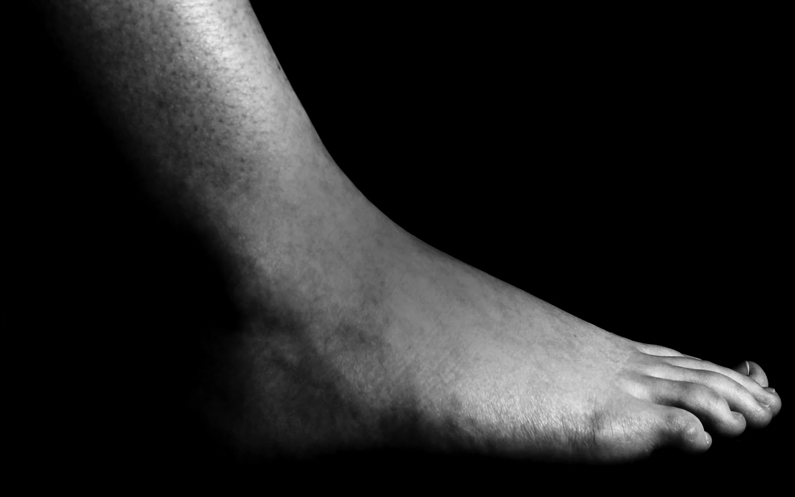

Lorratz, podologia klinika Tolosan
Esaiguzu zer gertatzen zaizun eta zure tratamendua ikusiko duzu
Zapaltzeko moduaren eta oin-euskarrien azterketa
Plataforma baten gainean zabiltza eta zure oinaren moldea hartzen dugu.
Oin-euskarriak zure oinaren moldearekin egiten ditugu, eta kontsultan probatzen dizkizugu, eraman aurretik.
Eskatu zure zapaltzeko moduaren azterketaZer duzu?
Aukeratu zer gertatzen zaizun eta ikusiko duzu zer tratamendu den, saioak zenbat irauten duen eta jada idatzita dagoen WhatsAppeko mezua.